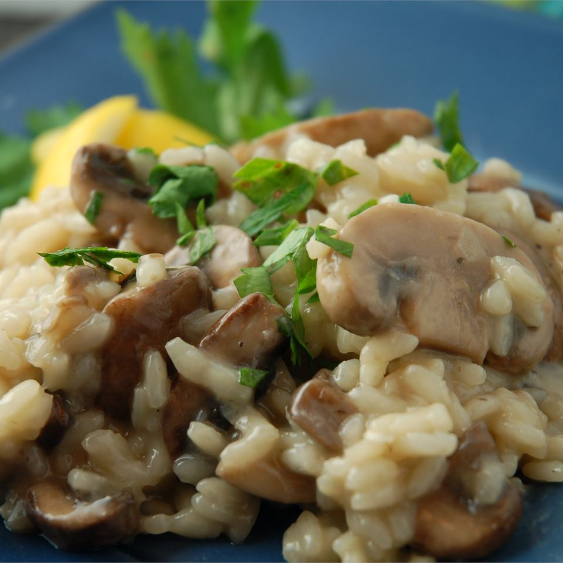

Gourmet Mushroom Risotto

Description
An authentic Italian-style risotto. This savory dish can be served on its own, or as a side to grilled meats and chicken.
Ingredients
- 6 cups chicekn broth, divided
- 3 tablespoons olive oil, divided
- 1 pound portobello mushrooms, thinly sliced
- 1 pound white mushrooms, thinly sliced
- 2 shallots, diced
- 1 1/2 cups Arborio rice
- 1/2 cup dry white wine
- sea salt to taste
- freshly ground black pepper to taste
- 3 tablespoons finely chopped chives
- 4 tablespoons butter
- 1/3 cup freshly grated Parmesan cheese
Steps
- In a saucepan, warm the broth over low heat.
- Warm 2 tablespoons olive oil in a large saucepan over medium-high heat. Stir in the mushrooms, and cook until soft, about 3 minutes. Remove mushrooms and thier liquid, and set aside.
- Add 1 tablespoon olive oil to skillet, and stir in the shallots. Cook 1 minute. Add rice, stirring to coat withoil, about 2 minutes. When the rice has taken on a pale, golden color, pour in wine, stirring constantly until the wine is fully absorbed. Add 1/2 cup broth to the rice, and stir until the broth is absorbed. Continue adding broth 1/2 cup at a time, stirring continuously, until the liquid is absorbed and the rice is al dente, about 15 to 20 minutes.
- Remove from heat, and stir in mushrooms with their liquid, butter, chives, and parmesan. Season with salt and pepper